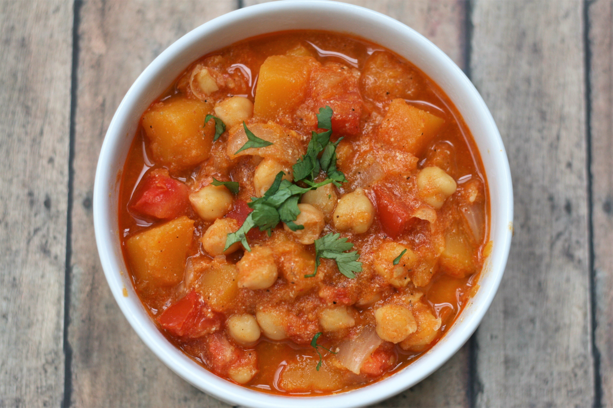

Butternut Squash Curry

Description:
Serve this butternut squash curry with rice!
Ingredients:
- 1 tablespoon olive oil, or as needed
- 1 medium butternut squash - peeled, seeded, and cubed
- 1 medium red onion, diced
- 2 tablespoons red curry paste
- 1 1/4 cups vegetable broth
- 4 medium tomatoes, chopped
- 1 (15 ounce) can chickpeas, drained
- salt and ground black pepper to taste
- 3 tablespoons Greek yogurt
- 1/2 tablespoon ground coriander
Directions:
- Heat oil in a pot over medium heat. Add squash to the hot oil; cook and stir for 3
minutes. Add onion and curry paste; cook and stir for 4 minutes. Pour in vegetable
broth, cover, and cook until squash is tender, about 20 minutes.
- Stir tomatoes, chickpeas, salt, and pepper into the pot and cook until heated
through, about 4 minutes. Stir in Greek yogurt and coriander.